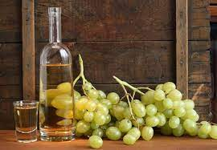

Граппа. Что это такое .

Граппа – алкогольный напиток, произведенный в результате перегонки виноградного жмыха. Иногда граппу называют вином, но из-за крепости (40-50 градусов) ее чаще называют водкой. По международной классификации граппу относят к классу бренди, а в соответствии с международным декретом от 1997 г граппой называются напитки, произведенные исключительно на территории Италии. Этим же декретом строго регламентируются стандарты изготовления и качество напитка.
В процессе производства вина всегда остается небольшое количество перебродившей массы из веточек, косточек и кожуры винограда. С целью утилизации эту массу перегоняют путем дистилляции, а на выходе получается крепкий напиток – граппа.
ИсторияТочных сведений относительно происхождения граппы нет. Одни исследователи утверждают, что сицилийцы позаимствовали метод дистилляции у арабов в 9 веке и применили его к отходам винного производства. Другие ученые полагают, что жителям Фриули был известен этот напиток еще в 5 веке. Некоторые исследователи уверены, что родиной граппы является Бургундия. Сами же итальянцы уверены, что напиток родом из небольшого городка Бассано дель Граппа у одноименной горы Граппа. Из всех версий можно заключить одно – возраст напитка перевалил за 1,5 тысячи лет.
Изначально граппу употребляли преимущественно крестьяне. По вкусу напиток получался грубым, резким, но прекрасно усмирял классовую ненависть и залечивал душевные раны.
Широкое распространение граппа получила в 60-70-х годах 20 века. За короткие сроки она стала не только невероятно популярна, ее производство стало экономически выгодным. Итальянский напиток стал пользоваться успехом в Европе и Америке, а его статус кардинально изменился. Сегодня граппу можно отнести к классу «премиум», и разливают его в изысканные дизайнерские бутылки, а цена у него довольно высока. Он удивительным образом сочетает в себе достоинства ликера, бренди и водки. На сегодняшний день граппу производят в основном в известном винодельческом регионе Венето. Есть также заводы и в других регионах Италии – Фриули, Трентино, Пьемонт.
Технология производства и виды граппыКачество граппы зависит от исходного сырья. Самый качественный напиток получается путем перегонки жмыха белого винограда, из которого только что выжали сок, либо из остатков винограда для дорого вина.
Дистилляция может проводиться двумя способами: в колоннах непрерывной дистилляции или в медном перегонном кубе. На выходе получается уже готовый к употреблению напиток, который могут либо сразу разливать в тары, либо некоторое время выдержать в вишневых или дубовых свежих бочках. Выдерживание в деревянных бочках придает граппе янтарный оттенок и характерный привкус дубильных веществ.
Виды граппы:
- Вlanka – свежевыжатый напиток.Имеет белый цвет и резкий вкус. Благодаря низкой стоимости он наиболее популярен в Италии;
- аffinata in legno – граппа, выдержанная в бочках на протяжении полугода. Имеет мягкий вкус и светло-золотистый оттенок;
- Vecchia – напиток, выдержанный в деревянных бочках на протяжении одного года;
- Stravecchia – напиток, выдержанный в дубовых бочках полтора года. Имеет крепость более 50 оборотов и насыщенный золотистый оттенок;
- Monovitigno – граппа, изготовленная преимущественно из одного сорта винограда (Каберне, Риболла, Терольдего, Пино Гри, Неббиоло, Шардонне и др.);
- Polivitigno – напиток, приготовленный из двух и более сортов винограда;
- Аromatica – граппа, произведенная в результате перегонки душистых виноградных сортов Мускато или Просеко;
- Аromatizzata – напиток, полученный из виноградных спиртов, настоянных на фруктах, ягодах и специях (миндаль, можжевельник, корица, анис и др.);
- Uve – напиток, производимый из целого винограда. Имеет характерную крепость и чистый винный аромат;
- grappa soft – низкоградусный напиток (менее 30 градусов).
Самый распространенный сорт вlanka пьют в охлажденным до 8° С виде. Остальные сорта принято употреблять комнатной температуры. Часто граппу добавляют в кофе или употребляют в чистом виде с лимоном.
Полезные свойства граппыИз-за своей высокой крепости граппу часто используют для дезинфицирования ушибов, ран и ссадин. Благодаря этому же свойству на граппе часто делают различные лечебные настойки.
Так, при бессоннице и нервном возбуждении на граппе делают настойку хмеля. С этой целью измельчают шишки хмеля, и 2 столовые ложки полученного порошка заливают 200 мл алкогольного напитка. Настаивают полученную смесь на протяжении десяти дней, после чего настойку принимают по 10-15 капель дважды в день.
А вот избавиться от мигрени и головной боли может помочь апельсиновая настойка. Полкилограмма измельченных апельсинов, 100 г хрена, натертого на терке, засыпают 1 кг сахара и заливают 0,5 л граппы и 0,5 л воды. Варят все это на водяной бане, пока сахар полностью не растопится (около часа), процеживают жидкость и дают охладиться. Принимают по трети стакана один раз в день через два часа после приема пищи.
Граппу широко используют в традиционных итальянских блюдах. Так, например, ее используют при фламбировании креветок, мяса, в составе маринадов для рыбы и мяса, а также при изготовлении различных десертов и коктейлей.
Опасные свойства граппыСледует ограничить потребление граппы людям с заболеваниями нервной, сердечно-сосудистой систем, а также при болезнях желудочно-кишечного тракта.
Кроме того, как и другие алкогольные напитки, граппу не следует употреблять беременным и кормящим женщинам и лицам моложе 18 лет.
Источник: http://www.neboleem.net/grappa.php